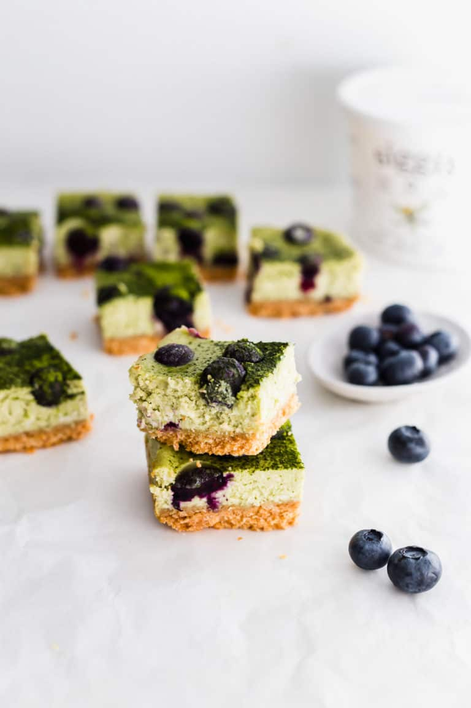
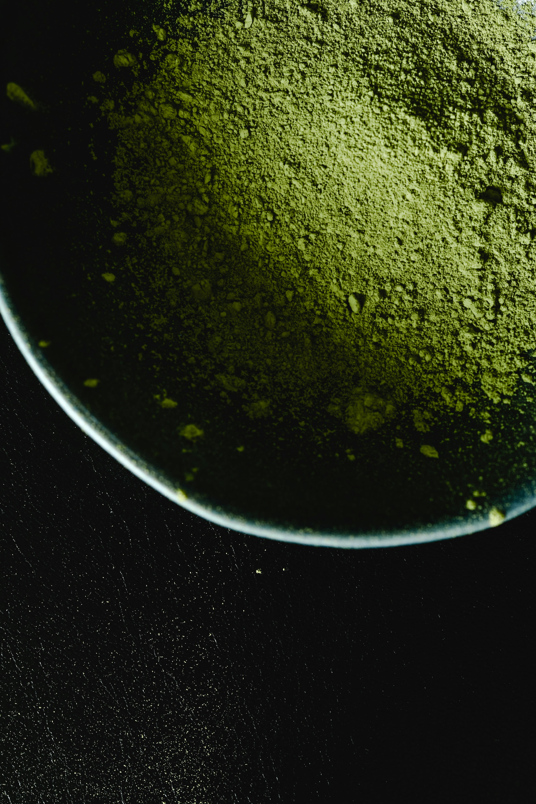
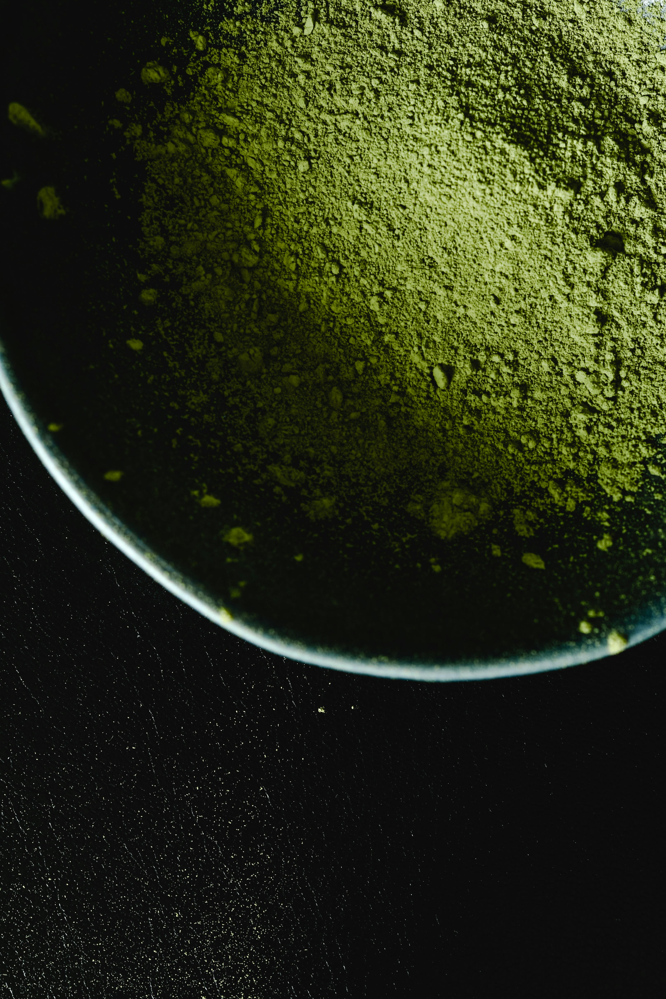
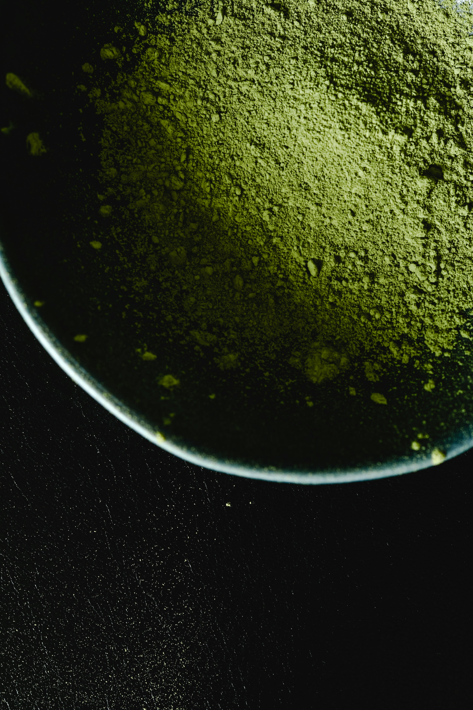

These cheesecake bars are creamy, rich and decadent with the flavors of matcha, blueberries and yogurt.
Total Time 3 hrs 35 mins
Servings 18 pcs
Calories 116 kcal


Ingredients
Crust:
9 full-sheets graham crackers
1 tablespoon granulated sugar
5 tablespoon salted butter melted
Filling:
8 oz cream cheese room temperature
250 g low-fat yogurt room temperature
2 eggs room temperature
½ C granulated sugar
1 teaspoon vanilla extract
1 tablespoon matcha + extra for dusting
½ C fresh blueberries
Instructions
Preheat oven to 325°F/163°C.
Line a 9" by 9" square baking dish with parchment paper.
Add the graham crackers and sugar to a food processor. Pulse intermittently until the crackers are
the size of small crumbs. Slowly drizzle in the melted butter while pulsing to incorporate into the
crumbs. The texture should resemble slightly damp soil.
Transfer the mixture into the baking dish and press down firmly with your hands. Use the back of a
measuring cup to flatten the crust evenly.
Bake at 325°F/163°C for about 15 minutes, until golden and aromatic. Remove from the oven and let
it
cool.
In a stand mixer fitted with a paddle attachment, whip together the cream cheese, low-fat yogurt,
and sugar until light and fluffy on medium speed. Lower the speed and add in the eggs one at a time.
Stop and scrape the mixture down. Add in the vanilla extract, matcha powder, and continue to mix
until homogeneous.
Pour in the cheesecake mixture on top of the crust. Give it a tap to release any air bubbles. If
there are any bubbles, use a toothpick to gently pop them.
Add blueberries on top of the cheesecake layer and place into the oven at 325°F/163°C for 35
minutes, or until the center is slightly jiggly.
Remove from the oven and let it cool completely. Place into the fridge to chill for at least 3
hours, or overnight. When ready to serve, remove from refrigerator and slice into 16 bars. Dust with
additional matcha
if
you wish.
 
